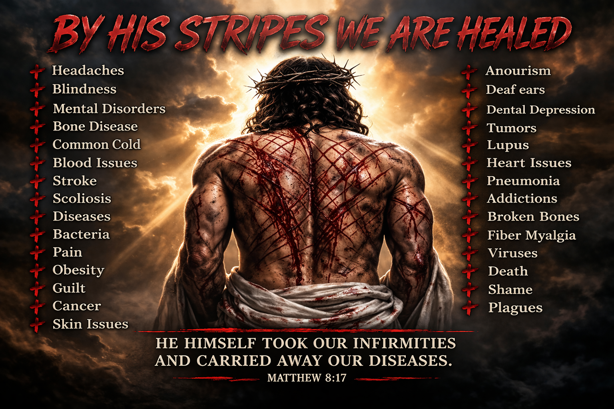
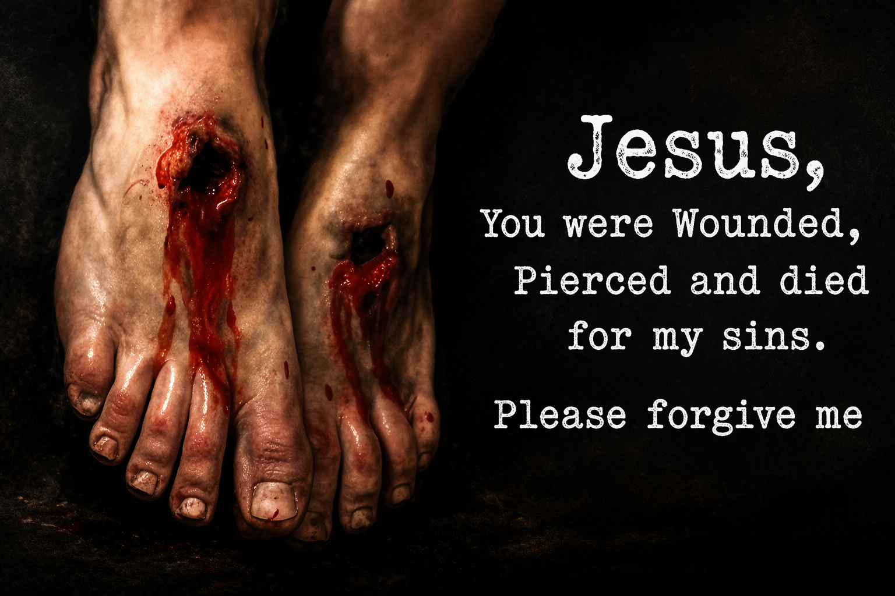
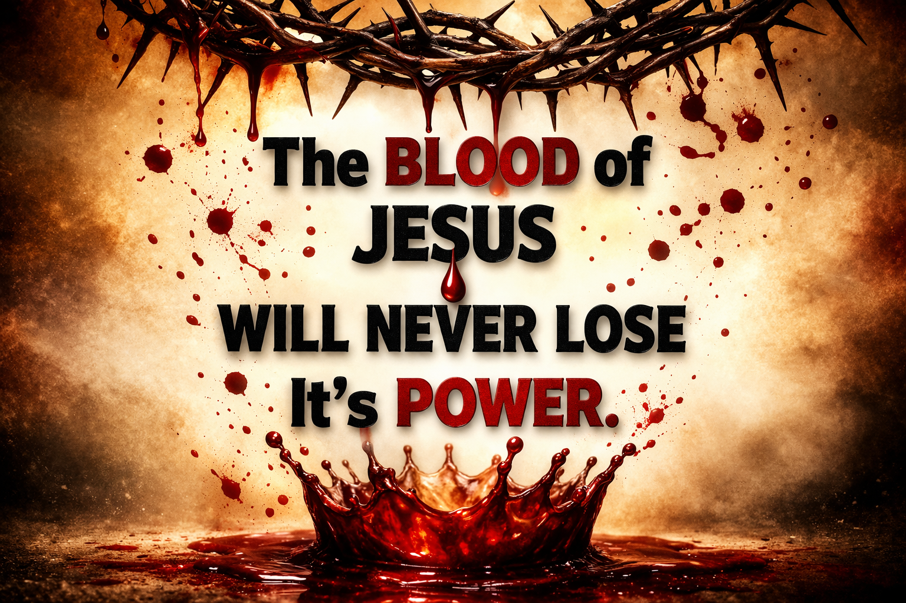

April 2026

It Pays To Serve The Lord & Put Him First In Our Lives!!! I Love Jesus More Than Anyone Or Anything!!! He Is My Life and He Saved Me When I Was 6 Years Old and He Called Me To Preach His Word When I Was 19 Years Old. He Chose My Greatest Blessing To Be My Husband Harvey Kendrick. God Gave Us The Greatest Son Lee and Two Wonderful Grandchildren Jasmine & Isaiah! God Blesses Our Lives Everyday To Live, To Enjoy Life, and When We Are Attack By The Enemy, Harvey & I Praise God,& Trust God As We Wait For Deliverance, and Healing. We Use What The devil Intended To Destroy Us With To Share Another Testimony: “LET ME TELL YOU HOW GOD TURN MY TRIAL INTO A BLESSING!!!” Praise The Lord!!! Friday, April 24, 2026, Harvey & I Went For Our 6 Month Checkups and Lab Work. Friday Our Blood Pressure Was Both Same Numbers Which Was Great!!! Today We Got Our Lab Test Back & Harvey’s Had Improved From 6 Months Ago. My Lab Test Were All Great! No Kidney Disease, No Diabetes, No High Cholesterol, & Etc. I Have Never Had To Take Daily Medications and Still At Age 68 I Do Not Need Too. I Always Pray For Good Health. I Thank God He Has Blessed Me With This Priceless Gift Of Health. Yes I Am Tried & Attacked By The devil and I Have Been Through Out My Life, With Car Wrecks, Cancer, Losing Everything We Own, and Starting Over and Much More. The devil Desires To Kill Me, But I Just Keep The Faith and Keep Crying Out To Jesus and He Comes To Rescue Me! Jesus Is Not Ready Yet To Take Me Home, But When It Is My Time, I Will Continue To LIVE In A Different Location and That Place Is Where My Heavenly Home Is Called HEAVEN! I Am Ready To Go When He Is Ready For Me, But Until Then I Will Keep Trying To Win The Lost To Accept Jesus Christ As Their Lord & Savior and I Will Keep Encouraging Others To Keep The Faith For NOTHING IS IMPOSSIBLE WITH GOD!!!!

Church Calendar

T-Shirts:We are taking orders this month for our Church T-Shrits
They will be available in 2 colors eithers Pink or Blue. If you want to order one or more for you and family members, (These must be per-pain)
please see Sis.Debra Summerlin to order and pay for them
Size and Cost
- Small $12
- Medium $12
- Large $12
- X-Large $12
- 2X-Large $15
- 3X-Large $18
- 4X-Large $18
- 5x-Large $20
If interested in Children sizes and prices, please check in with Sis.Debra Summerlin
CHURCH NEEDS:
Heaven Bound Church of God needs volunteers to help keep God’s house clean! We need volunteers to vacuum, clean the sanctuary, and clean both bathrooms one time a month.
- We need donations of bottled water.
- We need donations of children’s church sausage biscuits or chicken biscuits.
- Dish Washing Liquid
- Scrubbing Pads
- Bathroom Liquid Soap
- Bathroom Spray Air Freshers
- Comet Cleaner
- Mr. Clean Mop Cleaner
- LONG Aluminum Foil
- Large Paper Plates
- 16 oz. Drinking Cups
- Paper Towels
- Styrofoam To-Go Plates


- Sister Patsy Laster - Heart
- Larry Smith-Pancreatic Cancer
- Brother Tony Brownsword- Hip & Back Issues
- Sister Diane Skipper - Blood Pressure
- Kathie Buchanan - Need Total Healing Throughout Her Body
- Brother Wyatt Pike- Kidneys Be Healed and Come Off Dialysis
- Zack Holloway- Eye Be Totally Healed
- Pastor Douglas Golden - (Pastor Debbie’s Cousin) Infection In Bone In Leg
- Lisa Calvins- (Pastor Debbie’s Cousin) Healing From Brain Surgery
- Pastor Joe Mauthe-Cellulitis, Gout & Arthritis in leg
- Pastor Lee Kendrick
- Pastor Debbie Kendrick

💐 A Special Thank You
We want to give a heartfelt thank you to Sister Beverly Brownsword for faithfully putting together our monthly church flyers. Your time, effort, and creativity help keep everyone informed and connected, and your work truly blesses our church family each month.
We appreciate all you do, Beverly! 💛